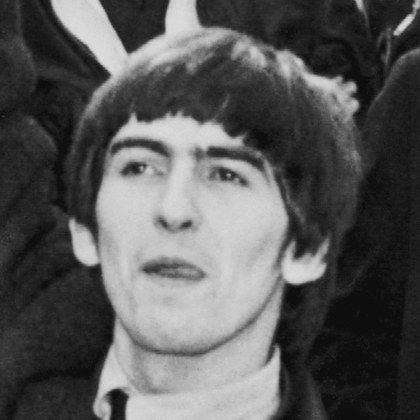

1. Джон Леннон
 Джон Леннон
Джон Леннон
(ритм-гитара, соло-гитара, клавишные, бубен, маракасы, бас-гитара, губная гармоника, вокал)
2. Пол Маккартни
Пол Маккартни
(бас-гитара, клавишные, ударные, гитара, вокал)
3. Джордж Харрисон

Джордж Харрисон(соло-гитара, ритм-гитара, ситар, бубен, клавишные, вокал)
4. Ринго Старр
Ринго Старр
(ударные, ритм-гитара, бубен, маракасы, коубелл, бонги, клавишные, вокал)